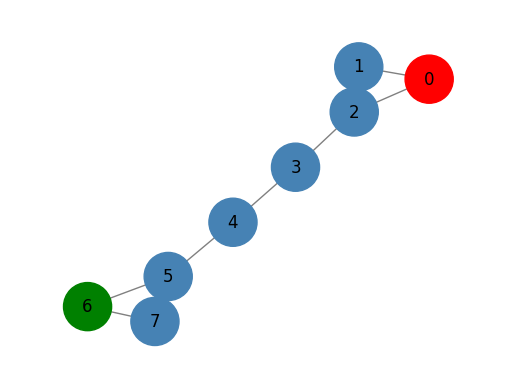
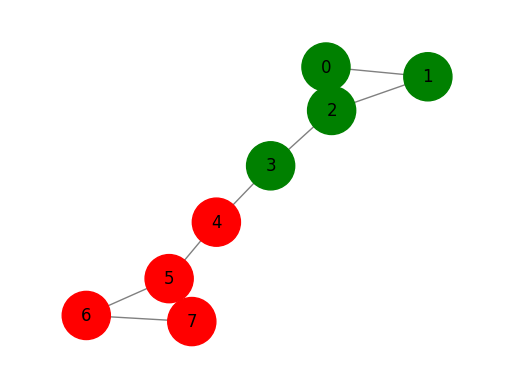
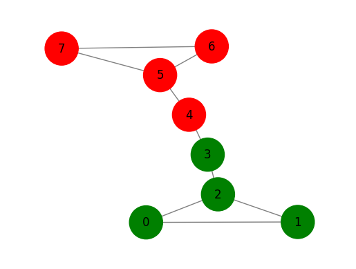

import matplotlib.pyplot as plt
def draw_graph(G, node_names={}, nodes_label=[], node_size=900):
pos_nodes = nx.spring_layout(G)
col = {0:"steelblue",1:"red",2:"green"}
colors = [col[x] for x in nodes_label]
nx.draw_networkx(G, pos_nodes, with_labels=True, node_color=colors, node_size=node_size, edge_color='gray',
arrowsize=30)
pos_attrs = {}
for node, coords in pos_nodes.items():
pos_attrs[node] = (coords[0], coords[1] + 0.08)
plt.axis('off')
axis = plt.gca()
axis.set_xlim([1.2*x for x in axis.get_xlim()])
axis.set_ylim([1.2*y for y in axis.get_ylim()])
plt.show()CH4. 지도 그래프 학습(얕은 임베딩 방법)
graph
ref
얕은 임베딩 방법
유한한 입력 데이터 집합에 대해서 노드, 간선 또는 그래프 표현을 학습하는 그래프 임베딩 방법의 하위 집합
모델 학습에 사용된 것과 같은 데이터를 사용
Utility graph plot matrix
라벨 전파 알고리즘
- 주어진 노드의 라벨을 인접 노드 또는 해당 노드에서 도달할 가능성이 높은 노드로 전파
import networkx as nx
G = nx.barbell_graph(m1=3, m2=2)
nodes_label = [0 for x in range(len(G.nodes()))]
nodes_label[0] = 1
nodes_label[6] = 2
draw_graph(G, nodes_label=nodes_label, node_size=1200)
0과 6에만 라벨이 지정됨
라벨이 지정된 노드의 정보를 이용하여 다른 노드로 이동할 확률 계싼
그림의 그래프에 대한 대각 차수 행렬
import numpy as np
from numpy.linalg import inv
D = [G.degree(n) for n in G.nodes()]
D = np.diag(D)
Darray([[2, 0, 0, 0, 0, 0, 0, 0],
[0, 2, 0, 0, 0, 0, 0, 0],
[0, 0, 3, 0, 0, 0, 0, 0],
[0, 0, 0, 2, 0, 0, 0, 0],
[0, 0, 0, 0, 2, 0, 0, 0],
[0, 0, 0, 0, 0, 3, 0, 0],
[0, 0, 0, 0, 0, 0, 2, 0],
[0, 0, 0, 0, 0, 0, 0, 2]])그림의 그래프에 대한 전이 행렬
A = inv(D)*nx.to_numpy_matrix(G)
Amatrix([[0. , 0.5 , 0.5 , 0. , 0. ,
0. , 0. , 0. ],
[0.5 , 0. , 0.5 , 0. , 0. ,
0. , 0. , 0. ],
[0.33333333, 0.33333333, 0. , 0.33333333, 0. ,
0. , 0. , 0. ],
[0. , 0. , 0.5 , 0. , 0.5 ,
0. , 0. , 0. ],
[0. , 0. , 0. , 0.5 , 0. ,
0.5 , 0. , 0. ],
[0. , 0. , 0. , 0. , 0.33333333,
0. , 0.33333333, 0.33333333],
[0. , 0. , 0. , 0. , 0. ,
0.5 , 0. , 0.5 ],
[0. , 0. , 0. , 0. , 0. ,
0.5 , 0.5 , 0. ]])Label propagation implemenation
- 행렬의 각 행은 샘플, 각 열은 특징을 나타냄
import numpy as np
import networkx as nx
from numpy.linalg import inv
from abc import ABCMeta, abstractmethod
from sklearn.base import BaseEstimator, ClassifierMixin
from sklearn.utils.multiclass import check_classification_targets
from sklearn.utils.validation import check_is_fitted, _deprecate_positional_args
class GraphLabelPropagation(ClassifierMixin, BaseEstimator, metaclass=ABCMeta):
"""Graph label propagation module.
Parameters
----------
max_iter : int, default=30
Change maximum number of iterations allowed.
tol : float, default=1e-3
Convergence tolerance: threshold to consider the system at steady
state.
"""
@_deprecate_positional_args
def __init__(self, max_iter=30, tol=1e-3):
self.max_iter = max_iter
self.tol = tol
def predict(self, X):
"""Performs inductive inference across the model.
Parameters
----------
X : A networkx array.
The data matrix.
Returns
-------
y : ndarray of shape (n_samples,)
Predictions for input data.
"""
probas = self.predict_proba(X)
return self.classes_[np.argmax(probas, axis=1)].ravel()
def predict_proba(self, X):
"""Predict probability for each possible outcome.
Compute the probability estimates for each single node in X
and each possible outcome seen during training (categorical
distribution).
Parameters
----------
X : A networkx array.
Returns
-------
probabilities : ndarray of shape (n_samples, n_classes)
Normalized probability distributions across
class labels.
"""
check_is_fitted(self)
return self.label_distributions_
def _validate_data(self, X, y):
if not isinstance(X, nx.Graph):
raise ValueError("Input should be a networkX graph")
if not len(y) == len(X.nodes()):
raise ValueError("Label data input shape should be equal to the number of nodes in the graph")
return X, y
@staticmethod
def build_label(x,classes):
tmp = np.zeros((classes))
tmp[x] = 1
return tmp
def fit(self, X, y):
"""Fit a semi-supervised label propagation model based
on the input graph G and corresponding label matrix y with a dedicated marker value for
unlabeled samples.
Parameters
----------
X : A networkX array.
y : array-like of shape (n_samples,)
`n_labeled_samples` (unlabeled points are marked as -1)
All unlabeled samples will be transductively assigned labels.
Returns
-------
self : object
"""
X, y = self._validate_data(X, y)
self.X_ = X
check_classification_targets(y)
D = [X.degree(n) for n in X.nodes()]
D = np.diag(D)
# label construction
# construct a categorical distribution for classification only
unlabeled_index = np.where(y==-1)[0]
labeled_index = np.where(y!=-1)[0]
unique_classes = np.unique(y[labeled_index])
self.classes_ = unique_classes
Y0 = np.array([self.build_label(y[x], len(unique_classes))
if x in labeled_index else np.zeros(len(unique_classes)) for x in range(len(y))])
A = inv(D)*nx.to_numpy_matrix(G)
Y_prev = Y0
it = 0
c_tool = 10
while it < self.max_iter & c_tool > self.tol:
Y = A*Y_prev
#force labeled nodes
Y[labeled_index] = Y0[labeled_index]
it +=1
c_tol = np.sum(np.abs(Y-Y_prev))
Y_prev = Y
self.label_distributions_ = Y
return self- 이게 뭐시여
Label propagation execution
glp = GraphLabelPropagation()
y = np.array([-1 for x in range(len(G.nodes()))])
y[0] = 1
y[6] = 0
glp.fit(G,y)
tmp = glp.predict(G)
print(glp.predict_proba(G))
draw_graph(G, nodes_label=tmp+1, node_size=1200)[[0. 1. ]
[0.05338542 0.90006109]
[0.11845743 0.8081115 ]
[0.31951678 0.553297 ]
[0.553297 0.31951678]
[0.8081115 0.11845743]
[1. 0. ]
[0.90006109 0.05338542]]
라벨 확산 알고리즘
라벨 전파 방식의 한계인 초기 라벨링 극복하고자 만들어짐
초기 라벨은 학습 과정엥서 수정이 불가. 각 반복에서 얻은 원래 값과 같아야함
라벨이 지정된 제약을 완화해 라벨이 지정된 입력 노드가 교육 프로세스 중에 라벨 변경할 수 있도록 한다.
import networkx as nx
G = nx.barbell_graph(m1=3, m2=2)
nodes_label = [0 for x in range(len(G.nodes()))]
nodes_label[0] = 1
nodes_label[6] = 2
draw_graph(G, nodes_label=nodes_label, node_size=1200)
Degree matrix
import numpy as np
from numpy.linalg import inv
D = [G.degree(n) for n in G.nodes()]
D = np.diag(D)
Darray([[2, 0, 0, 0, 0, 0, 0, 0],
[0, 2, 0, 0, 0, 0, 0, 0],
[0, 0, 3, 0, 0, 0, 0, 0],
[0, 0, 0, 2, 0, 0, 0, 0],
[0, 0, 0, 0, 2, 0, 0, 0],
[0, 0, 0, 0, 0, 3, 0, 0],
[0, 0, 0, 0, 0, 0, 2, 0],
[0, 0, 0, 0, 0, 0, 0, 2]])Normalized graph Laplacian matrix

from scipy.linalg import fractional_matrix_power
D_inv = fractional_matrix_power(D, -0.5)
L = D_inv*nx.to_numpy_matrix(G)*D_inv
Lmatrix([[0. , 0.5 , 0.40824829, 0. , 0. ,
0. , 0. , 0. ],
[0.5 , 0. , 0.40824829, 0. , 0. ,
0. , 0. , 0. ],
[0.40824829, 0.40824829, 0. , 0.40824829, 0. ,
0. , 0. , 0. ],
[0. , 0. , 0.40824829, 0. , 0.5 ,
0. , 0. , 0. ],
[0. , 0. , 0. , 0.5 , 0. ,
0.40824829, 0. , 0. ],
[0. , 0. , 0. , 0. , 0.40824829,
0. , 0.40824829, 0.40824829],
[0. , 0. , 0. , 0. , 0. ,
0.40824829, 0. , 0.5 ],
[0. , 0. , 0. , 0. , 0. ,
0.40824829, 0.5 , 0. ]])Label spreading implementation
import numpy as np
import networkx as nx
from sklearn.preprocessing import normalize
from scipy.linalg import fractional_matrix_power
from sklearn.utils.multiclass import check_classification_targets
class GraphLabelSpreading(GraphLabelPropagation):
"""Graph label propagation module.
Parameters
----------
max_iter : int, default=30
Change maximum number of iterations allowed.
tol : float, default=1e-3
Convergence tolerance: threshold to consider the system at steady
state.
"""
@_deprecate_positional_args
def __init__(self, max_iter=30, tol=1e-3, alpha=0.6):
self.alpha = alpha
super().__init__(max_iter, tol)
def fit(self, X, y):
"""Fit a semi-supervised label propagation model based
on the input graph G and corresponding label matrix y with a dedicated marker value for
unlabeled samples.
Parameters
----------
X : A networkX array.
y : array-like of shape (n_samples,)
`n_labeled_samples` (unlabeled points are marked as -1)
All unlabeled samples will be transductively assigned labels.
Returns
-------
self : object
"""
X, y = self._validate_data(X, y)
self.X_ = X
check_classification_targets(y)
D = [X.degree(n) for n in X.nodes()]
D = np.diag(D)
D_inv = np.matrix(fractional_matrix_power(D,-0.5))
L = D_inv*nx.to_numpy_matrix(G)*D_inv
# label construction
# construct a categorical distribution for classification only
unlabeled_index = np.where(y==-1)[0]
labeled_index = np.where(y!=-1)[0]
unique_classes = np.unique(y[labeled_index])
self.classes_ = unique_classes
Y0 = np.array([self.build_label(y[x], len(unique_classes))
if x in labeled_index else np.zeros(len(unique_classes)) for x in range(len(y))])
Y_prev = Y0
it = 0
c_tool = 10
while it < self.max_iter & c_tool > self.tol:
Y = self.alpha*(L*Y_prev)+((1-self.alpha)*Y0)
it +=1
c_tol = np.sum(np.abs(Y-Y_prev))
Y_prev = Y
self.label_distributions_ = Y
return selfLabel Spreading
gls = GraphLabelSpreading(max_iter=1000)
y = np.array([-1 for x in range(len(G.nodes()))])
y[0] = 1
y[6] = 0
gls.fit(G,y)
tmp = gls.predict(G)
print(gls.predict_proba(G))
draw_graph(G, nodes_label=tmp+1, node_size=1200)[[0.00148824 0.50403871]
[0.00148824 0.19630098]
[0.00471728 0.18369265]
[0.01591722 0.05001252]
[0.05001252 0.01591722]
[0.18369265 0.00471728]
[0.50403871 0.00148824]
[0.19630098 0.00148824]]
라벨 전파 할당보다 라벨 확산 할당이 확률이 더 낮다.
초기 라벨 할당의 영향이 정규화 매개 변수 \(\alpha\)에 의해 가중되기 때문에